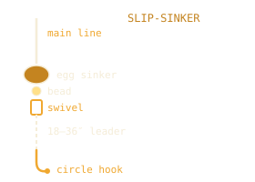
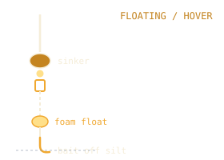
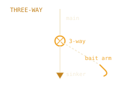
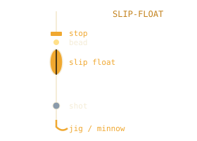

Everyday cats
- Med–heavy spinning or baitcast
- 12–20 lb mono / fluoro or 20–30 lb braid + fluoro leader
- Circle hooks 2/0–5/0 · egg / no-roll sinkers ½–3 oz
- Rod holders (2–3) · headlamp · net · pliers
- Measuring board (28″ / 35″ trophy lines)
Phone-first kits for Hoover Reservoir: cats, crappie, bass, saugeye. Bank vs boat cards, short buy lists, and packing checklists.
Disclosure: No paid affiliate IDs on this page yet. If affiliate or sponsored links are added later, they will be labeled. Buy what fits your budget; confirm regs and safety gear yourself.
Hoover Reservoir (Westerville) is one of Ohio’s best multi-species lakes, especially for catfish. About 2,884 acres of water and 45 miles of shoreline on the ODNR lake map, with depths to about 60 ft near the dam at summer pool.
10 hp motor limit and 10 mph speed limit (Columbus city code), with idle speed within 100 ft of shore. It’s a drinking-water reservoir. Lower pressure than many big lakes; kayaks and small boats work well. Night helps channel and flathead (blues too); it is not best for every species.
Alum Creek Lake is about 3,330 acres on the ODNR fishing map, a long, narrow Corps of Engineers reservoir with saugeye, muskie, smallmouth and largemouth, and crappie.
Unlimited horsepower on the south main lake, no wake on the north end above US 36/SR 37 (ODNR, Alum Creek State Park). It’s a drinking-water reservoir. Kayaks and small boats fit the no wake coves best; expect big boat wakes by day on the south end.
Buckeye Lake is about 2,873 acres on the ODNR fishing map (the state park says 3,100), an old canal feeder lake that is shallow everywhere, with saugeye, crappie, panfish and channel cats.
No wake within 300 ft of any land mass and in marked areas. Shallow water and stumps reward slow, careful boating, and the lake warms first in spring. Check Ohio’s BeachGuard for algae advisories in summer.
O’Shaughnessy Reservoir is 912 acres with 18.4 miles of shoreline, a City of Columbus drinking-water reservoir on the Scioto River, over 40 ft deep near the dam but mostly 20 ft or less. ODNR lists it among the lakes it stocks with hybrid striped bass.
Unlimited horsepower, 40 mph limit by day and 10 mph from sunset to sunrise (City code), idle within 100 ft of shore and bridges. No jet skis, tubing or swimming. Skiing and wakeboarding are allowed, so expect wakes by day.
Griggs Reservoir is 387 acres, a long, narrow City of Columbus reservoir about 6 miles from the dam north, mostly 10 to 15 ft deep. ODNR says it holds a strong population of large hybrid striped bass, with fish over 20 inches not uncommon.
Unlimited horsepower, 40 mph limit by day and 10 mph from sunset to sunrise (City code), idle within 100 ft of shore and bridges. No jet skis, tubing or swimming. The city park runs along the east bank from the dam north to Lane Road.
Indian Lake is about 5,100 acres with 117 miles of shoreline, an old canal feeder lake that is shallow throughout. ODNR calls it one of Ohio’s best saugeye lakes, with big crappie, bluegill over 8 inches, largemouth and channel and flathead cats.
No horsepower limit, with a 300 ft no wake zone marked on the ODNR map. Shallow flats and channels reward slow boating after dark. Check Ohio’s BeachGuard for algae advisories in summer.
Delaware Lake is about 1,215 acres on the ODNR fishing map, a Corps of Engineers flood control reservoir on the Olentangy River with 32 miles of shoreline. ODNR says it is known first for crappie, with largemouth, channel cats, bluegill and white bass.
Unlimited horsepower. The water level moves with flood control, so check today’s level before you go.
Deer Creek Lake is about 1,301 acres on the ODNR fishing map, a Corps of Engineers flood control reservoir on Deer Creek with 17.9 miles of shoreline. ODNR says the park is famous for early spring saugeye below the dam, with catfish, largemouth and crappie in the lake.
Unlimited horsepower. ODNR says the level can change up to 20 ft, with a fall drawdown to winter pool, so check today’s level before you go.
Madison Lake is about 98 acres on ODNR’s fishing page and map (the state park says 106), just under 6 ft at its deepest, a small state park lake made by damming Deer Creek in 1946 and 1947, with 4.7 miles of shoreline. ODNR lists bass, bluegill, crappie, channel catfish and bullhead.
Electric motors only, one launch ramp. No public gauge posts the lake level.
Knox Lake is about 476 acres on the ODNR fishing map (469 on ODNR’s fishing area page), built by the Division of Wildlife in 1954 on the Kokosing River, with 10.9 miles of shoreline. ODNR calls it one of the best largemouth lakes in the state and a trophy flathead lake.
10 hp limit; larger motors may run at no wake or idle only. Standing timber in the upper lake. No public gauge posts the lake level.
Clear Fork Reservoir is about 1,033 acres on the ODNR fishing map (971 on ODNR’s page, about 1,000 on the City’s), a City of Mansfield water supply lake finished in 1949, with 18 miles of shoreline on the map. ODNR lists it as a muskie lake and stocks muskie every year.
Idle speed, no wake on the whole lake and no horsepower limit (City of Mansfield code); ODNR’s page lists 8 mph, but the City rule is stricter. Shore fishing on the south and west shores only, no swimming or wading, and no parking from dark to dawn outside designated camping areas. No public gauge posts the lake level.
Seneca Lake is 3,509 acres with 45 miles of shoreline (ODNR), the largest lake in the Muskingum Watershed Conservancy District chain. The Corps of Engineers built the dam in 1938 across Seneca Fork of Wills Creek.
399 hp limit. MWCD runs boating, swimming and camping; ODNR leases the fishing rights. Launch, fuel and rentals at the marina off State Route 313. USGS posts the lake level.
Dillon Lake is a Corps of Engineers flood control lake finished in 1961: 1,376 acres on ODNR’s fishing page (1,560 on the state park page).
Unlimited horsepower; many coves are no wake. Two ramps at the south end. The Corps posts the pool level, and the lake is drawn down for winter.
Lake Logan is 333 acres at normal pool (ODNR’s fishing page; the park page says 400), built in 1955, 18 ft at the deepest, with headwaters 3 ft or less.
10 hp limit and 10 mph. Main ramp on the southeast side off Lake Logan Road. No public gauge posts the lake level.
Salt Fork Lake is 2,952 acres (ODNR), with standing timber left in many bays, an artificial reef on the north branch and boulder banks. The dam was finished in 1967.
Unlimited horsepower with marked speed and ski zones. ODNR counts 10 ramps; two marinas run seasonally. No public gauge posts the lake level.
Burr Oak Lake is 664 acres (state park page), held by the Corps of Engineers’ Tom Jenkins Dam. ODNR calls it one of the top bass lakes in the area.
10 hp limit, idle above that; no jet drives. Ramps at Dock 1, Dock 3, Dock 4 and the lodge. The Corps posts the pool level.
Dow Lake in Strouds Run State Park is 171 acres on ODNR’s fishing page (161 on the park page), 33 ft at the deepest, with 6.4 miles of shoreline. The dam was finished in 1960.
10 hp limit. One ramp at the northeast edge off County Road 20; shore fishing off US 50 near the dam. No public gauge posts the lake level.
Mosquito Creek Lake is 7,241 acres on ODNR’s fishing page (7,199 on the map), 24 ft at the deepest. The Corps of Engineers built it in 1944.
No hp limit, no wake within 300 ft of shore, and no skiing, tubing or PWCs north of the SR 88 causeway. Main ramp off SR 305 and the causeway ramp are lit. USGS posts the lake level.
Berlin Lake is a Corps of Engineers lake on the Mahoning River, built in 1942: 3,341 acres on ODNR’s map, 55 ft at the deepest, and the level can swing 20 ft in a year.
No hp limit by day, 10 mph at night. The Bonner Road ramp is closed to ; Mill Creek is open in its place. USGS posts the lake level.
West Branch Reservoir (Michael J. Kirwan Reservoir) is 2,650 acres on ODNR’s pages (2,729 on the map), finished by the Corps in 1965.
Unlimited hp, no wake within 300 ft of shore and west of the Rock Spring Road causeway. Five ramps and an accessible pier by the marina. USGS posts the lake level.
Pymatuning Lake is 16,349 acres, the largest inland lake in Ohio by ODNR’s count, 30 ft at the deepest, shared with Pennsylvania. This site covers the Ohio side.
20 hp limit. Ohio and Pennsylvania share the fishing rules. The USGS lake gauge has posted nothing since .
Lake Milton is 1,693 acres on ODNR’s map, built on the Mahoning River by the City of Youngstown in 1916. I-76 crosses it.
No hp limit. Three ramps: Miller’s Landing, Robinson Point and Pointview. Fall drawdown of about 8 ft from about Oct. 15. USGS posts the lake level.
Leesville Lake is an MWCD lake of 1,000 acres (1,011 on ODNR’s map), dammed across McGuire Creek in 1938, with 27 miles of shore and no road around it.
10 hp limit. Two public ramps, an accessible kayak launch and fishing pier, and the South Fork and North Fork marinas. USGS posts the lake level.
Grand Lake St. Marys is 12,896 acres on ODNR’s map (about 12,680 on the fishing page), built 1837 to 1845 for the Miami and Erie Canal. Most of it is under 7 ft.
Unlimited hp, no wake within 300 ft of shore, and the southwest refuge is closed to boats. Seven state ramps. USGS posts the lake level.
Caesar Creek Lake is 2,607 acres at normal summer pool (ODNR), a Corps of Engineers lake filled from 1978. At 115 ft near the dam it is the deepest lake in Ohio.
Unlimited hp. Four public ramps plus the campground ramp and a marina. USGS posts the lake level; the Corps posts a dated temperature profile, not a live temp.
East Fork Lake (William H. Harsha Lake) is 2,107 acres on ODNR’s map, a Corps of Engineers lake that reached normal pool in 1979. At 113 ft at the dam it is the second deepest lake in Ohio.
No hp limit. Eight public ramps and a fishing pier. USGS posts the lake level; the Corps posts an outflow temp, labelled outflow, not lake surface temperature.
C.J. Brown Reservoir is 1,970 acres (ODNR), a Corps of Engineers lake at Buck Creek State Park, filled to its seasonal pool in 1975. ODNR calls it a premier walleye lake.
Unlimited hp. A five lane ramp, a marina with fuel and two more ramps up the lake. USGS posts the lake level; the Corps posts a dated temperature profile, not a live temp.
Rocky Fork Lake is 1,992 acres (ODNR), impounded in 1951, about 15 ft deep on average with stumps in the upper end.
Unlimited hp. Six lighted state park ramps and 700+ docks. No public gauge posts the level or the water temp.
LaDue Reservoir is 1,477 acres on ODNR’s map, a City of Akron water supply lake built in 1963. ODNR Wildlife manages the fish.
Electric motors only. Two ramps and a city boat house. No public gauge posts the level or the water temp.
Paint Creek Lake is 1,190 acres (ODNR), a Corps of Engineers flood control lake filled in 1974, 50 ft deep at the dam with limestone bluffs.
Unlimited hp. Three ramps and a marina. The Corps posts the lake level and an outflow water temp; there is no lake surface temp.
The Portage Lakes are a chain of canal reservoirs from 1825, 1,190 acres on ODNR’s map; Turkeyfoot Lake is the largest.
400 hp and mostly no wake. Eight state park ramps. No public gauge posts the level or the water temp.
Mogadore Reservoir is 1,104 acres (ODNR), built by the City of Akron in 1939 and no deeper than 24 ft. ODNR Wildlife manages the fish.
Electric motors only. A city boat house and two more launch sites. No public gauge posts the level or the water temp.
Lake Loramie is 870 acres on ODNR’s map, a Miami and Erie Canal feeder lake completed in 1844 and a state park since 1949.
No wake except the west end speed zone. Six ramps. USGS posts the lake level; no public gauge posts the water temp.
Nimisila Reservoir is 742 acres (ODNR), built in 1936 to 1937 to keep the Portage Lakes full. ODNR says it is being lowered for a dam study ().
Electric motors only. Four ramps. No public gauge posts the level or the water temp.
Cowan Lake is 692 acres (ODNR), built on Cowan Creek in 1950, 42 ft deep at most. ODNR is drawing it down 13.5 ft from for dam work through 2028.
10 hp. Three ramps, a marina and a kayak launch. No public gauge posts the level or the water temp.
Acton Lake is 590 acres (ODNR), dammed on Four Mile Creek in 1956 at Hueston Woods State Park.
No wake over 10 hp. One five lane ramp and a marina. No public gauge posts the level or the water temp.
Tappan Lake is 2,131 acres on ODNR’s page (2,350 per MWCD), an MWCD lake on Little Stillwater Creek with 47 miles of shoreline.
399 hp limit. Two public ramps, a marina with bait and fuel, and US 250 along the main lake. USGS posts the lake level; no public water temp.
Piedmont Lake is 2,270 acres (ODNR, MWCD), an MWCD lake behind a Corps dam on Stillwater Creek, 38 ft at its deepest. ODNR says the state record muskie came from here.
10 hp limit. Two public ramps, a pier at Reynolds Rd and Piedmont Marina. USGS posts the lake level; no public water temp.
Clendening Lake is 1,702 acres on ODNR’s page, a long, winding MWCD lake on Brushy Fork with deeply wooded shores.
10 hp limit. Three public ramps and Clendening Marina with bait and tackle. USGS posts the lake level; no public water temp.
Atwood Lake is 1,540 acres (ODNR, MWCD), an MWCD lake on Indian Fork of Conotton Creek at the western edge of Dellroy.
25 hp limit. Two public ramps and two marinas. USGS posts the lake level; no public water temp.
Charles Mill Lake is 1,350 acres (ODNR, MWCD), an MWCD lake built in 1935 on the Black Fork of the Mohican River, in three basins.
10 hp limit. Two ramps off SR 430 and a full service marina. The Corps posts the lake level; no public water temp.
Pleasant Hill Lake is 850 acres (MWCD), built in 1938 on the Clear Fork of the Mohican River, with Mohican State Park on the south shore.
Unlimited horsepower. One public ramp at Pleasant Hill Marina. The Corps posts the lake level; no public water temp.
Beach City Lake is 420 acres (MWCD), a shallow MWCD lake behind a Corps flood control dam, next to ODNR’s Beach City Wildlife Area.
No public ramp; bank fishing at the dam day use area and below the dam (USACE). The Corps posts the lake level; no public water temp.
Wingfoot Lake is 444 acres (ODNR), Goodyear’s old blimp and company park lake, owned by ODNR since 2009.
Idle speed, no wake, any motor. Two wildlife area launches and an accessible pier. No public gauge posts the level or the water temp.
East Branch Reservoir is about 403 acres (ODNR lake layer), a City of Akron water supply reservoir at the head of the Cuyahoga River.
Electric only. One small craft launch at Headwaters Park, and long bank closures. No public gauge posts the level or the water temp.
Guilford Lake is 361 acres (ODNR), a canal feeder lake from 1834 on the West Fork of Little Beaver Creek, 22 ft deep at most.
Drawn down about 20 ft for dam work until a spring 2027 refill (ODNR). 10 hp, three ramps. No public gauge posts the level or the water temp.
Highlandtown Lake is 187 acres on the ODNR fishing map, built in 1966 in Highlandtown Wildlife Area.
10 hp. Two wildlife area ramps. No public gauge posts the level or the water temp.
Punderson Lake is 80 acres (ODNR), Ohio’s largest and deepest natural kettle lake, 57 ft at most.
Electric only. One ramp; bait and rentals at the camp store. No public gauge posts the level or the water temp.
Wellington Upground Reservoir is 160 acres (ODNR), built by the Village of Wellington in the 1970s for water supply.
Paddle and electric only, open sunrise to sunset. One launch off Jones Rd. No public gauge posts the level or the water temp.
Cheshire Market, 5094 Cheshire Rd, Galena: live bait, lures, line, hooks, rods and reels. Alum Creek Drive Thru, 6999 OH-37, Sunbury, is listed as a bait shop; call ahead for live bait.
North Shore Bait & Tackle, 5187 Walnut Rd, Buckeye Lake: live bait and tackle. Millersport Drive Thru, Deli & Bait Shop, 12325 Lancaster St, Millersport: live bait, tackle and marine supplies.
Chet & Fran's Country Store, 27050 OH-58, Wellington: country store on SR 58 that sells minnows, per reviews. Chatham General Store, 6403 Avon Lake Rd, Medina: general store Google lists as a bait shop.
B & S Country Carryout, 38268 OH-39, Salineville: carryout near the lake with bait and snacks, per reviews.
Runzo's Outdoor Sports, 27533 US-62, Beloit: outdoor sports store Google lists as a fishing store. B & S Country Carryout, 38268 OH-39, Salineville: carryout near the lake with bait and snacks, per reviews.
Detweiler Outdoors, 4900 Parks West Rd, Middlefield: outdoor store with fishing tackle, per reviews.
Mogadore Bait, Tackle & Marine Repair, 780 Randolph Rd, Mogadore: bait, tackle and boat repair north of the lake. Chappy's Cruise Thru, 2379 Canfield Rd, Akron: drive thru that sells crawlers, waxworms and minnows, per reviews.
Big Fish General Store & Bait, 3911 OH-95, Perrysville: general store with bait on SR 95 near the marina. Mohican Hardware and Outdoors, 21100 Pealer Mill Rd, Danville: hardware and outdoors store listed as a bait shop.
The Island Trading Post, 60 Maine St, Ashland: fishing store near the lake; sells shiners, per reviews.
TownHouse Drive Thru & General Store, 6054 OH-212, Somerdale: drive thru general store on SR 212; bait and drinks, per reviews. Hoss Marine, 5281 Deer Rd SW, Bowerston: fishing store with bait, per reviews.
Woodland Outdoor & Supply, 79550 Freeport Tippecanoe Rd, Tippecanoe: fishing and hunting store at Tippecanoe, near the Clendening dam.
Woodland Outdoor & Supply, 79550 Freeport Tippecanoe Rd, Tippecanoe: fishing and hunting store at Tippecanoe, near the Clendening dam. Old Barn Bait, 66527 Hendrysburg Freeport Rd, Barnesville: bait shop south of the lake.
Tappan Lakeside Store, 32270 Cadiz-Dennison Rd, Scio: bait shop on the north shore road. Tappan Lake Marina, 33315 Cadiz-Dennison Rd, Scio: MWCD says the marina sells bait and tackle. Deersville General Store, 212 Main St, Deersville: general store in Deersville that Google lists as a bait shop.
Colony Food Mart, 5284 College Corner Pike, Oxford: store south of the park that sells minnows, per reviews.
Fishing Pole Bait Shop, 5071 OH-350, Clarksville: bait and tackle west of the lake.
Eddie's Wholesale Live Bait, 600 E Comet Rd, Clinton: live bait south of the lake, cash only per reviews. Fisherman's Central, 5461 Manchester Rd, Akron: fishing store on Manchester Rd.
Spillway Bait & Tackle, 12201 OH-362, Minster: bait shop by the west end.
Mogadore Bait, Tackle & Marine Repair, 780 Randolph Rd, Mogadore: bait, tackle and boat repair south of the lake.
Fisherman's Central, 5461 Manchester Rd, Akron: fishing store on Manchester Rd. Cast Cray PLX Bait & Tackle, 656 W Turkeyfoot Lake Rd, Akron: bait and tackle by Turkeyfoot Lake. Long Lake Bait & Tackle, 855 Portage Lakes Dr, Akron: bait shop by Long Lake.
Crossroads Bait Tackle and Ammo, 12882 US-50, Hillsboro: bait shop on US 50 south of the lake.
Bows & Reels, 18225 Madison Rd, Middlefield: hunting and fishing store east of the lake.
Bayview Bait & Tackle, 11104 N Shore Dr, Hillsboro: bait shop on the north shore. Crossroads Bait Tackle and Ammo, 12882 US-50, Hillsboro: bait shop on US 50 east of the lake.
Howard's Lakeside General Store, 1919 Croft Rd, Springfield: bait shop west of the lake. Buck Creek State Park marina store, 2451 Grant Rd, Springfield: ODNR says the marina store sells bait, tackle and fuel.
Legacy Angler Outfitters, 299 Haskell Ln, Batavia: fishing store west of the lake. Boars Head Bait & Carry Out, 2818 Old State Rte 32, Batavia: bait and carryout north of the lake.
B & B Carryout, 2028 OH-73, Waynesville: carryout west of the lake. Spillway Party Supply, 7646 Oregonia Rd, Waynesville: store south of the dam. Caesar Creek State Park Marina, 8574 OH-73, Waynesville: ODNR says the marina sells live bait, Apr. 1 to Oct. 15.
East Side Bait & Tackle, 360 Northway Dr, St Marys: bait and tackle on the east end. The Outdoorsman, 172 E Bank Rd, St Marys: fishing store by East Bank.
Lakeside Sport Shop, 2115 Wilson Sharpsville Rd, Cortland: bait and tackle. Causeway Bait and Tackle, 2233 Greenville Rd NE, Cortland: bait and snacks, with its own ramp by the causeway (ODNR).
Les's Bait & Marina, 10583 Cobb Rd, Deerfield: bait shop and marina.
Gateway Bait & Tackle, 6517 OH-85, Andover: bait and tackle on SR 85, west of the causeway.
North Coast Bait & Tackle, 16963 Mahoning Ave, Lake Milton: bait and tackle by the Mahoning Ave bridge.
Old Dutchman Bait & Tackle, 904 S Sunbury Rd, Westerville. Cut shad, shrimp, liver, crawlers, goldfish, live bluegill, floating-rig parts.
License required ages 16+. Confirm 2026–27 rules on ODNR / HuntFish OH before you keep fish.
| Species | Reminder (verify current rules) |
|---|---|
| Crappie | 30 a day (black and white combined), 9″ minimum. Hoover site-specific rule (2026–27). From Hoover goes to the statewide rule, no daily limit and no minimum (ODNR)No daily limit or minimum size. Griggs isn’t on ODNR’s list of 30 fish, 9″ crappie waters (2026–27 rules)20 a day (black and white combined), 9″ minimum (Pymatuning Ohio–Pennsylvania rules, 2026–27)No daily limit or minimum size. Hoover isn’t on ODNR’s list of 30 fish, 9″ crappie waters (2026–27 rules) |
| Bass LM/SM | 5 a day combined, 12″ minimum (statewide; no Hoover exception)4 a day combined: 2 under 15″ and 2 15″ or longer (Hoover site-specific rule, 2026–27). Statewide 5 a day, 12″ from (ODNR)Most of the chain: 5 a day combined, 12″ minimum (statewide). Long Lake: 3 a day, none from 14″ to 20″, only 1 at 20″ or longer (2026–27). Long Lake goes statewide from (ODNR)5 a day combined, 15″ minimum (site-specific rule, 2026–27). Statewide 5 a day, 12″ from (ODNR)4 a day combined: 2 under 15″ and 2 15″ or longer (Hoover site-specific rule, 2026–27). Statewide 5 a day, 12″ from (ODNR)3 a day combined: none from 14″ to 20″, no more than 2 under 14″ and 1 at 20″ or longer (site-specific rule, 2026–27). Statewide 5 a day, 12″ from (ODNR)3 a day combined: none from 14″ to 20″, no more than 2 under 14″ and 1 at 20″ or longer (site-specific rule, 2026–27). Statewide 5 a day, 12″ from (ODNR)4 a day combined: 2 under 15″ and 2 15″ or longer (site-specific rule, 2026–27). Statewide 5 a day, 12″ from (ODNR)5 a day combined, 18″ minimum (Knox Lake site-specific rule, 2026–27). Statewide 5 a day, 12″ from (ODNR)5 a day combined, 15″ minimum (Seneca site-specific rule, 2026–27). Statewide 5 a day, 12″ from (ODNR)4 a day combined: 2 under 15″ and 2 15″ or longer (Salt Fork site-specific rule, 2026–27). Statewide 5 a day, 12″ from (ODNR)5 a day combined, none between 12″ and 15″ may be kept (Hoover site-specific slot, 2026–27). Statewide 5 a day, 12″ from (ODNR)5 a day combined, 12″ minimum (Pymatuning Ohio–Pennsylvania rules, 2026–27) |
| Walleye / saugeye / sauger | 6 a day combined, no minimum size at Hoover (the 15″ rule covers only a few other lakes)6 a day combined, 15″ minimum (Hoover site-specific rule, 2026–27)6 walleye a day, 15″ minimum (Pymatuning Ohio–Pennsylvania rules, 2026–27) |
| Cats | No limit under the trophy lines. One channel cat 28″ or longer, and one each of blue and flathead 35″ or longer, per day (statewide; Hoover has no catfish exception)No daily limit or minimum size for catfish or any fish not listed here (Pymatuning Ohio–Pennsylvania rules, 2026–27) |
| Hybrid / white bass | 30 a day combined, no more than 4 over 15″ (statewide; no Hoover exception) |
| Muskie | 1 a day, no minimum size (statewide; Hoover has no muskie exception)2 a day, 30″ minimum (Pymatuning Ohio–Pennsylvania rules, 2026–27) |
Species 1 of 4
Channel, blue, flathead
At Alum Creek the cat to target is the channel catfish; ODNR doesn't list blues or flatheads there. The blue and flathead notes below are Hoover fish.
At Buckeye Lake the cats are channel catfish (abundant, 3 to 5 lb is typical) and bullhead; ODNR doesn't list blues or flatheads there. The blue and flathead notes below are Hoover fish.
ODNR hasn't posted a catfish survey for O’Shaughnessy Reservoir, and it doesn't list blues or flatheads there. The blue and flathead notes below are Hoover fish.
At Indian Lake the cats are channel catfish (most 18 to 20 inches in ODNR's hoop nets) and a growing natural flathead population, with 20 to 30 lb fish caught every year. ODNR doesn't list blues there. The blue notes below are Hoover fish.
At Delaware the cat to target is the channel catfish: ODNR's hoop nets caught them at three times the statewide rate, though about three quarters were under 15 inches. ODNR doesn't list blues or flatheads there. The blue and flathead notes below are Hoover fish.
At Deer Creek Lake the cat ODNR lists is the channel catfish; it doesn't list blues or flatheads there. The blue and flathead notes below are Hoover fish.
At Madison Lake the cats are channel catfish, stocked by ODNR every other year, and bullhead. ODNR doesn't list blues or flatheads there. The blue and flathead notes below are Hoover fish.
ODNR calls Knox Lake a trophy flathead lake, with channel catfish too. ODNR doesn't list blues there. The blue notes below are Hoover fish.
At Clear Fork the cat ODNR lists is the channel catfish; it doesn't list blues or flatheads there. The blue and flathead notes below are Hoover fish.
At Seneca Lake the cat ODNR stocks is the blue catfish, most years since 2016. The flathead notes below are Hoover fish.
At Dillon Lake ODNR lists blue and channel catfish, with blues stocked every year since 2022. The flathead notes below are Hoover fish.
At Lake Logan the cat ODNR lists is the channel catfish, stocked every other year. ODNR doesn't list blues or flatheads there. The blue and flathead notes below are Hoover fish.
ODNR's Salt Fork pages don't list catfish, so the cat notes below are Hoover fish.
At Burr Oak ODNR lists channel catfish (10 to 25 inches), blue catfish stocked every year since 2022, and the occasional flathead.
At Dow Lake the cat ODNR lists is the channel catfish, last stocked in 2019. ODNR doesn't list blues or flatheads there. The blue and flathead notes below are Hoover fish.
At Mosquito Creek Lake the cat ODNR lists is the channel catfish. ODNR doesn't list blues or flatheads there. The blue and flathead notes below are Hoover fish.
At Berlin Lake the cat ODNR lists is the channel catfish, with its own ODNR survey. ODNR doesn't list blues or flatheads there. The blue and flathead notes below are Hoover fish.
At West Branch ODNR lists channel catfish and has stocked blue catfish every year since 2023. The flathead notes below are Hoover fish.
At Pymatuning the cat ODNR lists is the channel catfish. ODNR doesn't list blues or flatheads there. The blue and flathead notes below are Hoover fish.
At Lake Milton ODNR lists channel catfish and bullhead. ODNR doesn't list blues or flatheads there. The blue and flathead notes below are Hoover fish.
At Leesville ODNR stocks channel catfish every other year. ODNR doesn't list blues or flatheads there. The blue and flathead notes below are Hoover fish.
At Grand Lake St. Marys ODNR lists channel and flathead catfish and bullhead. ODNR doesn't list blue catfish there. The blue catfish notes below are Hoover fish.
At Caesar Creek Lake ODNR lists blue and channel catfish, and stocked blue catfish 2018 to 2022 and in 2024.
At East Fork Lake ODNR lists blue catfish, stocked every year since 2022. ODNR doesn't list channel catfish there.
At C.J. Brown Reservoir ODNR’s park page lists catfish; no ODNR catfish survey numbers are posted.
At Rocky Fork Lake ODNR lists channel and flathead catfish with good numbers and sizes.
At LaDue Reservoir ODNR lists channel catfish and stocks them every other year.
At Paint Creek Lake ODNR lists catfish, and its survey data shows channel catfish.
At the Portage Lakes ODNR lists channel catfish and bullhead, and stocks channel cats in Turkeyfoot Lake every other year.
At Mogadore Reservoir ODNR stocks channel catfish every other year.
At Lake Loramie ODNR lists channel catfish and bullhead, and stocked channel cats most years from 2016 to 2023.
At Nimisila Reservoir ODNR stocks channel catfish every other year.
At Cowan Lake ODNR says big flathead and channel catfish are present.
ODNR’s Acton Lake pages post no catfish survey numbers.
At Tappan Lake ODNR survey data lists channel catfish; no ODNR catfish survey numbers are posted on the lake page.
ODNR’s Piedmont Lake pages post no catfish survey numbers.
At Clendening Lake ODNR stocks blue catfish (17,047 advanced fingerlings in 2025), and its survey data lists blue and channel catfish.
At Atwood Lake ODNR stocked blue catfish 2023 to 2025 (15,800 advanced fingerlings in 2025) and channel catfish in 2020; its survey data lists channel catfish.
ODNR survey data lists channel catfish at Charles Mill Lake; no ODNR catfish survey numbers are posted on the lake page.
ODNR lists channel catfish and brown and black bullhead at Pleasant Hill, and stocked catchable channel catfish in 2016 to 2018 and 2021 to 2023.
ODNR’s wildlife area map lists bullhead at Beach City; no ODNR catfish survey numbers are posted.
At Wingfoot Lake ODNR stocks channel catfish every other year.
ODNR posts no catfish survey or stocking for East Branch Reservoir.
At Guilford Lake ODNR stocked channel catfish in 2016, 2018 and 2020.
At Highlandtown Lake ODNR stocked channel catfish in 2016 and 2020.
At Punderson Lake ODNR stocks channel catfish every other year.
At Wellington Upground Reservoir ODNR stocks channel catfish every other year.
Headline Hoover fishery. ODNR says some of the older blues already top 30 lb, and in 2019 Hoover gave up more 35″+ Fish Ohio blues than any other Ohio water. Night is strong for channel and flathead (blues too); daytime boat work still scores.
| Rig | Pieces |
|---|---|
| Slip-sinker / Carolina | Egg sinker → bead → swivel → 18–36″ leader → circle hook |
| Floating / hover | Same as slip + foam float or floating hook to lift bait off silt |
| 3-way | 3-way swivel · dropper to sinker · longer arm to bait (channel edges) |
| Balloon mid-depth (boat) | Balloon or float set bait mid-column while slow-trolling cut bait |
| Bank night | Rod holders · slip or floating · clicker / drag set · headlamp |



Species 2 of 4
Black and white

Species 3 of 4
Largemouth and smallmouth
Largemouth primary on Hoover; smallmouth show in rockier / clearer stretches. Stick worms are a Hoover staple.
Alum Creek is a real smallmouth lake: jerkbaits and cranks as they move up in spring, tubes and ned rigs slow. Largemouth in the coves.
Largemouth around docks, weeds and stumps in shallow water. Weedless baits save tackle.
ODNR hasn’t posted a bass survey for O’Shaughnessy Reservoir. Not available here yet.
Largemouth do well in Indian’s shallow water and vegetation, ODNR says, in good numbers though most are under 15 inches. Weedless baits save tackle.
A popular bass and tournament lake. ODNR’s largemouth numbers have trended down but are still good, mostly 12 to 15 inches; smallmouth are here too.
ODNR lists largemouth and smallmouth bass. It hasn’t posted bass survey numbers for Deer Creek Lake, so none here.
ODNR lists bass at Madison Lake. No ODNR survey numbers are posted. Electric motors only keeps it quiet.
One of Ohio’s best largemouth lakes, ODNR says: 51% over 15 inches, fifth in the state for bass over 15 inches. 18″ minimum, 5 a day (site-specific rule).
ODNR’s Waterbody Report lists largemouth bass. No ODNR bass survey numbers are posted for Clear Fork.
ODNR lists largemouth and smallmouth and posts a largemouth survey. 15″ minimum, 5 a day (site-specific rule).
ODNR lists largemouth and smallmouth bass. No ODNR bass survey numbers are posted for Dillon Lake.
ODNR lists largemouth bass. No ODNR bass survey numbers are posted for Lake Logan.
ODNR posts largemouth and smallmouth surveys for Salt Fork. 4 a day: 2 under 15″ and 2 over (site-specific rule).
One of the top bass lakes in the area, ODNR says: 3 to 23 inches, and fish over 18 every year. None between 12″ and 15″ may be kept.
ODNR lists largemouth bass. None between 12″ and 15″ may be kept, 5 a day (site-specific rule).
ODNR lists largemouth bass. No ODNR bass survey numbers are posted for Mosquito Creek Lake.
ODNR lists largemouth and smallmouth and posts survey reports for both. 5 a day, 12″ minimum (statewide).
ODNR lists largemouth and smallmouth bass. No ODNR bass survey numbers are posted for West Branch.
ODNR lists largemouth and smallmouth bass. 5 a day, 12″ minimum (Pymatuning Ohio–Pennsylvania rules).
ODNR lists largemouth and smallmouth bass. No ODNR bass survey numbers are posted for Lake Milton.
ODNR lists largemouth and smallmouth bass. No ODNR bass survey numbers are posted for Leesville Lake.
ODNR lists largemouth bass. No ODNR bass survey numbers are posted for Grand Lake St. Marys.
ODNR lists largemouth and smallmouth bass. No ODNR bass survey numbers are posted for Caesar Creek Lake.
ODNR reports excellent catches of largemouth and smallmouth bass at East Fork Lake. No ODNR bass survey numbers are posted.
ODNR lists largemouth and smallmouth bass with good numbers and sizes. No ODNR bass survey numbers are posted for C.J. Brown Reservoir.
ODNR lists largemouth bass, mostly 12 to 18 in with fish to 22; they take about 3 years to reach 12 in and 5 to reach 15.
ODNR lists largemouth bass, and its survey data shows smallmouth too. No ODNR bass survey numbers are posted on the lake page.
ODNR lists bass at Paint Creek Lake. No ODNR bass survey numbers are posted on the lake page.
ODNR lists largemouth bass. Long Lake has its own slot: none from 14″ to 20″ may be kept.
ODNR survey data lists largemouth bass. No ODNR bass survey numbers are posted on the lake page.
ODNR lists largemouth bass. No ODNR bass survey numbers are posted on the lake page.
ODNR survey data lists largemouth bass. No ODNR bass survey numbers are posted on the lake page.
ODNR’s electrofishing found 226 largemouth an hour at Cowan Lake, against 93 statewide, from 4 to 22 in.
ODNR says Acton Lake largemouth run 4 to 22 in and live up to 15 years.
ODNR survey data lists largemouth and smallmouth bass at Tappan Lake. No ODNR bass survey numbers are posted on the lake page.
ODNR surveys largemouth and smallmouth bass at Piedmont Lake. No bass numbers are posted on the lake page.
ODNR survey data lists largemouth bass at Clendening Lake. No ODNR bass survey numbers are posted on the lake page.
ODNR survey data lists largemouth and smallmouth bass at Atwood Lake. No ODNR bass survey numbers are posted on the lake page.
ODNR survey data lists largemouth bass at Charles Mill Lake. No ODNR bass survey numbers are posted on the lake page.
ODNR lists largemouth and smallmouth bass at Pleasant Hill. No ODNR bass survey numbers are posted on the lake page.
ODNR’s wildlife area map says largemouth bass fishing is best in spring and early summer. No ODNR bass survey numbers are posted.
ODNR’s park page names bass and bluegill from the shore; survey data lists largemouth bass. No ODNR bass survey numbers are posted.
ODNR survey data lists largemouth bass at East Branch Reservoir. No ODNR bass survey numbers are posted.
ODNR’s park page names bass, bluegill, crappie and channel catfish; survey data lists largemouth bass. No ODNR bass survey numbers are posted.
ODNR survey data lists largemouth bass at Highlandtown Lake. No ODNR bass survey numbers are posted.
ODNR’s park page names largemouth bass; survey data lists them too. No ODNR bass survey numbers are posted.
ODNR survey data lists largemouth and smallmouth bass at Wellington Upground Reservoir. No ODNR bass survey numbers are posted.
Species 4 of 4
Saugeye, walleye, sauger
Hoover’s saugeye and walleye come from ODNR stocking (walleye were added in 2019 for a study against saugeye). A main Alum Creek target: dam riprap, causeway rock and channel ledges, best at dusk and after dark. Buckeye Lake’s signature fish, stocked by ODNR: riprap, hard bottom and old towpath drop-offs, jigs with minnows. ODNR’s page for O’Shaughnessy Reservoir doesn’t list saugeye, so no lake notes here. ODNR says Deer Creek is famous for early spring saugeye fishing below the dam, and stocks about 130,000 saugeye fingerlings a year. ODNR calls Indian Lake one of Ohio’s best saugeye lakes: stocked fish survive and grow well in this shallow, very productive lake. ODNR stocks Seneca with saugeye every year, nearly two million fry in 2025. ODNR stocks Dillon Lake with saugeye fingerlings every year, 127,900 in 2025. ODNR stocks Lake Logan with saugeye every year; tailwater fishing off State Route 664. ODNR stocks Salt Fork with saugeye every year, and lists walleye too. ODNR stocks Dow Lake with saugeye every year, 17,963 in 2025. ODNR stocks Mosquito Creek Lake with walleye every year, 883,376 fingerlings in 2025. 15″ minimum here. ODNR stocks Berlin Lake with walleye every year, 404,931 fingerlings in 2025, and posts a walleye survey. 15″ minimum here. ODNR stocks West Branch with walleye fingerlings most years, 264,996 in 2025. 15″ minimum here. ODNR stocks Pymatuning with walleye fingerlings most years, 293,132 in 2025. 15″ minimum under the Ohio–Pennsylvania rules. ODNR stocks Lake Milton with walleye every year, 254,873 fingerlings in 2025. 15″ minimum here. ODNR stocks Leesville Lake with saugeye every year, 101,544 fingerlings in 2025. ODNR stocked Grand Lake St. Marys with triploid saugeye in 2025, 214,403 fingerlings plus fry. ODNR also lists walleye. ODNR stocked Caesar Creek Lake with saugeye every year from 2016 to 2025, mostly as fry (2,984,565 in 2025). ODNR stocked East Fork Lake with saugeye every year from 2018 to 2025 (212,290 fingerlings in 2025). ODNR stocks walleye at C.J. Brown Reservoir, not saugeye; saugeye show up in ODNR survey data. ODNR stocked Rocky Fork Lake with saugeye every year from 2016 to 2025 (261,205 fingerlings in 2025). ODNR stocks walleye at LaDue Reservoir, not saugeye; saugeye show up in ODNR survey data. ODNR stocked Paint Creek Lake with saugeye every year from 2016 to 2025 (118,054 fingerlings in 2025). ODNR stocks no saugeye or walleye in the Portage Lakes; ODNR lists pickerel there instead. ODNR stocks no saugeye or walleye in Mogadore Reservoir. ODNR stocked Lake Loramie with saugeye every year from 2016 to 2025 (87,656 fingerlings in 2025). ODNR stocked walleye in Nimisila Reservoir from 2016 to 2018; ODNR survey data lists walleye and saugeye. ODNR stocks Cowan Lake with saugeye every year and has since 2001 (104,229 fingerlings in 2025). ODNR stocked Acton Lake with saugeye every year from 2016 to 2025 (89,006 fingerlings in 2025); they reach 23 in in three years. ODNR stocked Tappan Lake with saugeye every year from 2016 to 2025 (341,199 fingerlings in 2025). ODNR stocked Piedmont Lake with saugeye every year from 2016 to 2025 (356,689 fingerlings in 2025). ODNR stocked Clendening Lake with saugeye every year from 2016 to 2025 (171,308 fingerlings in 2025). ODNR stocked Atwood Lake with saugeye every year from 2016 to 2025 (234,488 fingerlings in 2025). ODNR stocked Charles Mill Lake with saugeye every year from 2016 to 2025 (135,674 fingerlings in 2025). ODNR stocked Pleasant Hill Lake with saugeye every year from 2016 to 2025 (117,484 fingerlings in 2025). ODNR stocking records list no fish for Beach City Lake from 2016 to 2025. ODNR stocks no saugeye or walleye in Wingfoot Lake. ODNR stocks no saugeye or walleye in East Branch Reservoir. ODNR stocks no saugeye or walleye in Guilford Lake. ODNR stocks no saugeye or walleye in Highlandtown Lake. ODNR stocks no saugeye or walleye in Punderson Lake. ODNR stocks no saugeye or walleye in Wellington Upground Reservoir. Daily limit is 6 combined walleye, sauger and saugeye, with no minimum size at Hoover (2026–27 rules). Daily limit is 6, with a 15″ minimum at Hoover (2026–27 rules).